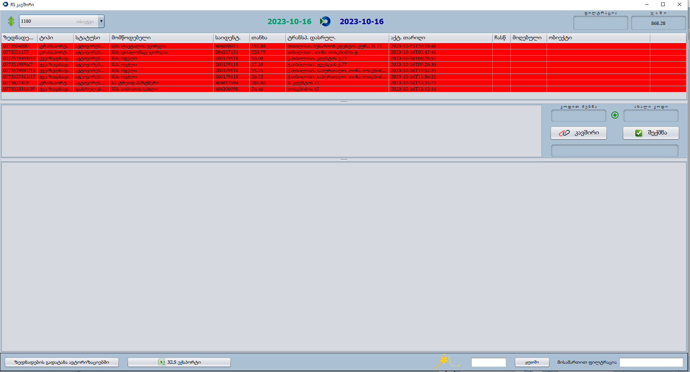
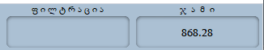
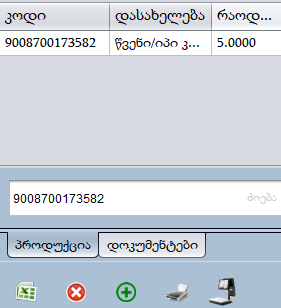

<article class="container-md">
  <div class="col-10">
    <h1>მიღება</h1>
    <section>
      <p>
        პროდუქციის მიღება , როდესაც პროდუქციას მოიტანენ ფიზიკურად, უნდა
        დავაფიქსიროთ პროგრამაშიც, რადგან პროგრამულ ნაშთზე აისახოს და პროდუქციის
        პროგრამული რაოდენობა ემთხვეოდეს ფიზიკურ ნაშთს.
      </p>
      <p>
        მომწოდებელი პროდუქციის მოტანამდე გვიტვირთავს ზედნადებს RS-ზე, პროგრამა
        დაკავშირებულია RS-თან, შესაბამისად ზედნადებები გამოჩნდება პროგრამაშიც.
        გავხსნათ პროგრამა , შევიდეთ მიღებაში, დავაჭიროთ
         ლოგოს.
      </p>

      
      <p>
        გამოტანილი ფანჯარა არის პროგრამის RS ფანჯარა, რომელსაც ინფორმაცია მოაქვს
        ჩვენი კომპანიის RS-ის საიტიდან. ვნახოთ რა ინფორმაცია გვაქვს RS -
        ფანჯარაში:
      </p>
    </section>
    <section class="mt-3">
      <div class="d-flex align-items-center">
        
        <p>
          დროის ფილტრაცია, შეგვიძლია მოვძებნოთ ზედნადებები ნებისმიერ თარიღში.
        </p>
      </div>
      <p>
        დროის ფილტრაციის გამოყენება: უნდა დავაჭიროთ RS-ლოგოს, გამოგვიტანს
        კალენდრის ფანჯარას, ჯამში გამოგვიტანს 2 ფანჯარას პირველ ფანჯარაში უნდა
        ავირჩიოთ დაწყების ხოლო მეორე ფანჯარაში დასრულების თარიღი.
      </p>
      <div class="row align-items-center">
        <div class="col text-center">
          <h1 class="fw-bold">ავირჩიოთ დაწყების თარიღი დავაჭიროთ „კი“</h1>
          
        </div>
        <div class="col text-center">
          <h1 class="fw-bold">ავირჩიოთ დასრულების თარიღი დავაჭიროთ „კი“</h1>
          
        </div>
      </div>
    </section>
    <section class="mt-3 d-flex align-items-center gap-4">
      
      <p>
        ასევე შეგვიძლია ზედნადებები გავფილტროთ , მომწოდებლის დასახელების ,
        საიდენთიფიკაციო კოდის და ზედნადების ნომრის მიხედვით. ჩავწეროთ
        ფილტრაციაში შესაბამისი ინფორმაცია.
      </p>
    </section>
    <section>
      <p>
        თუ ერთ შ.პ.ს -ს აქვს რამოდენიმე ობიექტი სხვადასხვა მისამართზე, რომელიმე
        მისამართზე ატვირთული ზედნადები ყველა ობიექტს გამოუჩნდება, რაც ზრდის იმის
        რისკებს რომ სხვა ობიექტის ზედნადები მივიღოთ, ანუ პროგრამულად მივიღოთ
        ისეთი პროდუქცია რომელიც რეალურად ჩვენს ობიექტზე არ მოუტანიათ. ამ
        ყველაფრის თავიდან ასაცილებლად , შეგვიძლია გამოვიყენოთ მისამართის
        ფილტრაცია
        
        ჩავწეროთ ჩვენი მისამართის რაიმე ამონარიდი. მისამართის სრულად ჩაწერა არ
        არის რეკომენდირებული რადგან მომწოდებლები ხანდახან ზუსტი მისამართით არ
        ტვირთავენ ზედნადებებს და შესაძლოა ჩვენს მიერ ჩაწერილ სიმბოლოებს არ
        შეიცავდეს მომწოდებლის მიერ მითითებული მისამართი, შესაბამისად არ
        გვიჩვენებს ზედნადებს.
      </p>
      <p>
        დამატებითი ფილტრაციის პარამეტრების გამოსატანად , მარცხენა ზედა კუთხეში
        დავაჭიროთ
         ღილაკს.
      </p>
    </section>
    <section>
      <p>
        
        ზედნადები შესაძლოა იყოს აქტივირებული , დასრულებული და გაუქმებული.
        აქტივირებულია ზედნადები, როდესაც ზედნადებს ჯერ არ დავთანხმებულვართ.
        დასრულებულია ზედნადები რომელიც დავიდასტურეთ. გაუქმებულია ზედნადები
        რომელიც არ შესრულდა, შესაძლოა მომწოდებელმა ზედნადებში მითითებულ თარიღში
        ვერ მოიტანონ პროდუქცია, ამ შემთხვევაში ატვირთული ზედნადები გაუქმდება და
        როდესაც მოიტანენ იმ თარიღში აიტვირთება ზედნადები, გაუქმებული ზედნადები
        არ უნდა მივიღოთ , არ უნდა იყოს თეთრი. წინააღმდეგ შემთხვევაში გვექნება
        ნაშთის და დავალიანების პრობლემა.
      </p>
      
    </section>
    <section class="container mt-3">
      <div class="row align-items-center">
        
        <p class="col-8">
          გვაძლევს საშუალებას გავფილტროთ , გაუტარებელი - მიუღებელი,
          დაკორექტირებული - მომწოდებლის მიერ ჩასწორებული ზედნადები შეიძლება იყოს
          ჩასწორებული პროდუქცია , რაოდენობა, ფასი , მისამართი ან სხვა.
          გაუქმებული - მომწოდებლის მიერ გაუქმებული ზედნადები.
        </p>
      </div>
    </section>
    <section class="mt-3">
      
      <p>ზედნადებების განჯარაში გვხვდება შემდეგი ინფორმაცია:</p>
      <ul>
        <li>
          <strong>ზედნადების ნომერი</strong> - დოკუმენტის ნომერი , არის
          უნიკალური , ვერ ექნება სხვა ზედნადებს იგივე ნომერი.
        </li>
        <li>
          <strong>ტიპი</strong> - ზედნადები შესაძლოა იყოს , აქტივირებული ,
          დასრულებული ან გაუქმებული.
        </li>
        <li><strong>სტატუსი</strong> - ზედნადების სტატუსი.</li>
        <li>
          <strong>მომწოდებელი </strong>- მომწოდებლის დასახელება, ვის შემოაქვს
          პროდუქცია.
        </li>
        <li>
          <strong>საიდენტიფიკაციო </strong>- მომწოდებლის საიდენთიფიკაციო კოდი.
        </li>
        <li>
          <strong>თანხა </strong> - ზედნადებში ატვირთული პროდუქციების ჯამური
          თვითღირებულება.
        </li>
        <li>
          <strong>ტრანსპორტირების დასრულების ადგილი </strong> - უნდა იყოს ჩვენი
          ობიექტის მისამართი, დაბრუნების ზედნადებზე შეგვხვედა მომწოდებლის
          მისამართი.
        </li>
        <li>
          <strong>აქტივაციის თარიღი </strong> - როდის გააქტიურდა ზედნადები.
        </li>
        <li>
          <strong>ჩასწორება </strong> - მომოწდებელმა ჩაასწორა თუ არა ზედნადები,
          პროგრამაში არ ჩანს კონკრეტულად რა არის ჩასწორებული. შეგვიძლია ვნახოთ
          RS -ის საიტზე.
        </li>
        <li>
          <strong> მიღებული </strong>- რა თანხაში მივიღეთ ზედნადები, უნდა
          ემთხეოდეს მომწოდებლის ატვირთულ თანხას.
        </li>
        <li>
          <strong>ობიექტი</strong> - მიღების შემდეგ ჩაიწერება ობიექტის ნომერი
          რომელზეც არის მიღებული ეს ზედნადები.
        </li>
        <li>
          <strong>ხელშეკრულების ნომერი</strong> - მიღების შემდეგ ჩაიწერე იმ
          ხელშეკრულების ნომერი რომლითაც მივიღებთ ზედნადებს.
        </li>
      </ul>
      <p>
        სურათში მითითებულ ფანჯარაში ნებისმიერ ადგილას თუ დავაჭერთ მაუსის
        მარჯვენა ღილაკს გამოგვიტანს ფანჯარას საიდანაც შეგვიძლია დამატებითი
        ინფორმაცია გამოვიტანოთ ზედნადებების შესახებ, როგორიცაა , ტრანსპორტირების
        დაწყება, მანქანის ნომერი, მძღოლის პირადი ნომერი და ზედნადებში მითითებული
        სხვა ინფორმაცია.
      </p>
      <p>
        ზედნადები შეიძლება იყოს , წითელი - მიუღებელი, თეთრი- მიღებული, ყვეითელი
        - ზედნადების თანხა და მიღებლი თანხა ერთმანეთს არ ედრება.
      </p>
    </section>
    <section>
      <p>
        დავაჭიროთ სასურველ ზედნადებს მისაღებად, გამოგვიტანს ხელშეკრულების
        ფანჯარას
      </p>
      
      <p>
        ვხედავთ ხელშეკრულების ნომერს , დასახელებას, დაწყების თარიღს და სტატუსს.
        აქ უნდა ავირჩიოთ რომელი ხელშეკრულებით ვიღებთ პროდუქციას, კონკრეტულად ამ
        მომწოდებელს სურათზე ნაჩვენები ხელშეკრულებები აქვს კარფურთან,
        ხელშეკრულებები ეთმანეთისგან განსხვავდება როგორც გადახდის პირობებით ასევე
        პროდუქციის სახეობებით, ანუ დანაყოფებით. აუცილებელია რომ პროდუქცია
        მივიღოთ სწორი ხელშეკრულებით, წინააღმდეგ შემთხვევაში არ დაგვერიცხება
        ბონუსები , ქეშბექები და დავალიანებასაც გვაჩვენებს არასწორად, რის
        შემდეგაც შეიძლება მომწოდებელმა დაგვბლოკოს.
      </p>
      <p>
        სწორი ხელშეკრულებით მისაღებად არ უნდა ავირჩიოთ წითელი, არააქტიური,
        ხელშეკრულება , ასევე არ ვირჩევთ ხელშეკრულებას რომელშიც წერია „დახურულია“
        - ეს ნიშნავს რომ ხელშეკრულება მალე გაუქმდება.
      </p>
    </section>
    <section>
      <p>
        სწორი ხელშეკრულებით მისაღებად არ უნდა ავირჩიოთ წითელი, არააქტიური,
        ხელშეკრულება , ასევე არ ვირჩევთ ხელშეკრულებას რომელშიც წერია „დახურულია“
        - ეს ნიშნავს რომ ხელშეკრულება მალე გაუქმდება.
      </p>
      

      <ul>
        <li>
          <strong>RS დასახელება</strong> - მომწოდებლის მიერ მითითებული
          პროდუქციის დასახელება.
        </li>
        <li>
          <strong>დასახელება </strong>- კარფურის მიერ მითითებული პროდუქციის
          დასახელება.
        </li>
        <li>
          <strong>ერთეული </strong>- მომწოდებელმა რა ერთეულით ატვირთა პროდუქცია.
        </li>
        <li>
          <strong>რაოდენობა </strong>- რამდენი ერთეული უნდა შემოიტანოს
          მომწოდებელმა.
        </li>
        <li>
          <strong>RS ფასი </strong>- მომწოდებლის მიერ მითითებული პროდუქციის
          თვითღირებულება. ანუ რა ფასში შემოაქვს პროდუქცია
        </li>
        <li>
          <strong>ფასი </strong>- ხელშეკრულებაში რა ფასად ზის პროდუქცია. უთითებს
          კარფური.
        </li>
        <li>
          <strong>ჯამი </strong>- რაოდენობა გამრავლებული RS ფასზე, პროდუქციის
          ჯამური თვითღირებულება.
        </li>
        <li>
          <strong>RS კოდი</strong> - მომწოდებლის მიერ მითითებული კოდი , უნდა
          იყოს პროდუქციის შტრიხკოდი, მაგრამ ხანდახან მომწოდებლები არ უთითებენ
          პროდუქციის შტრიხკოდს და გვხვდება ციფრები ან სხვა სიმბოლოები.
        </li>
        <li>
          <strong>კოდი </strong>- ატვირთული პროდუქცია რა კოდთან არის
          დაკავშირებული. რა თქმა უნდა ატვირთული პროდუქცია უნდა იყოს იმ
          შტრიხკოდთან დაკავშირებული რაც აქვს ფიზიკურად. სხვა შემთხვევაში
          პროდუქციას არ გაატარებს სალაროზე ან შესაძლოა აბსოლუტურად სხვა
          პროდუქციაზე დავაკავშიროთ მაგ: შემოგვიტანონ კარაქი და ჩვენ დავაკავშიროთ
          მაწონთან, ამ შემთხვევაში ფიზიკურად მივიღებთ კარაქს, მაგრამ ამ შეცდომის
          გამო პროგრამულად აგვესახება მაწონი. რაც გამოიწვევს ნაშთის პრობლემას.
        </li>
        <li>
          <strong>ხელშ </strong>- გვაჩვენეს რომ პროდუქცია ზის ხელშეკრულებაში, არ
          უნდა იყოს წითელი ფერი.
        </li>
        <li><strong></strong></li>
      </ul>
      <p>პროდუქცია შეიძლება შეგხვდეს სამი ფერის:</p>
      <ul>
        <li>
          <strong>წითელი </strong> - პროდუქცია არაფერთან არ არის დაკავშირებული.
          ამ შემთხევაში პროდუქცია უნდა მოვძებნოთ და დავაკავშიროთ. პროდუქციის
          მოძებნამდე უნდა დავრწმუნდეთ რომ სწორი ხელშეკრულება გვაქვს მითითებული.
          რადგან ბაზაში, სადაც უნდა მოვძებნოთ პროდუქცია, გვიჩვენებს მხოლოდ იმ
          პროდუქციებს რომელიც არჩეულ ხელშეკრულებაში ზის.
        </li>
        
        <p class="my-3">
          ამ ფანჯარაში ფილტრაციისთვის გვაქვს პროდუქციის დასახელებით, შტრიხკოდით
          და კოდით.
        </p>
      </ul>
      <ul>
        <div class="row">
          
          <div class="col-sm-6">
            <li>
              <strong>კოდით ძებნა </strong> - შეგვიძლია პროდუქცია მოვძებნოთ
              შტრიხკოდით და კოდით.
            </li>
            <li>
              <strong> დასახელებით ძებნა </strong>
              - შეგვიძლია პროდუქცია მოვძებნოთ დასახელებით და შტრიხკოდით.
            </li>
          </div>
        </div>
        <li class="mt-2">
          <strong>კონკრეტული მომწოდებლის პროდუქციაში ძებნა </strong> -
          ხელშეკრულებიანი მომწოდებლის მიღების დროს აუცილებელია, რომ ეს გრაფა
          იყოს მონიშნული, რადგან გვიჩვენოს ისეთი პროდუქციები, რომელიც ზის არჩეულ
          ხელშეკრულებაში. უნდა ამოვნიშნოთ იმ შემთხვევაში თუ ვიღებთ უხელშეკრულებო
          მომწოდებელის პროდუქციებს.
        </li>
        <li class="row align-items-center row-gap-4 mt-3">
          
          <span class="col-10"
            >პროდუქციის შექმნა, ვიყენებთ იმ შემთხვევაში როდესაც უხელშეკრულებო
            მომწოდებლისგან ვიღებთ პროდუქციას და ეს პროდუქცია არ არსებობს
            ბაზაში.</span
          >

          
          <span class="col-10">
            როდესაც პროდუქცია წითელია უნდა მოვძებნოთ , ავირჩიოთ და დავაკავშიროთ
            შესაბამის პროდუქციაზე(უნდა ავირჩიოთ ორივე, რომელ პროდუქციასაც
            ვაკავშირებთ და რომელ პროდუქციაზეც ვაკავშირებთ, არჩეულია პროდუქცია
            როდესაც არის ლურჯი.)
          </span>
        </li>
        <li>
          <strong> ყვითელი </strong>- RS ფასი(შემოტანის ფასი) არ ემთხვევა იმ
          ფასს, რა ფასშიც არის ჩასმული ხელშეკრულებაში. ამის მიზეზი შეიძლაბა იყოს
          ის, რომ პროდუქცია გაძვირდა, ხელშეკრულებაში არ არის ჩასწორებული
          კარფურის მიერ, ან პროგრამული განახლება არ გქონდეთ მიღებული. შეგიძლიათ
          დაუკავშირდეთ მეგა-ს გადაამოწმოთ განახლებულია თუ არა თქვენი ბაზა.
        </li>
        <li>
          <strong> თეთრი </strong>- ნიშნავს რომ პროდუქცია დაკავშირებულია და ფასი
          არ არის RS ფასზე მაღალი.
        </li>
      </ul>
      <p>
        
        მომწოდებელს შეიძლება პროდუქცია ჰქონდეს ატვირთული ყუთით. ამის ყველაზე
        კარგი მაგალითია სიგარეტების შემთხვევა, ხშირად მომწოდებლები სიგარეტს
        ტვირთავენ ბლოკით, პირობითად 20 კოლოფი სიგარეტის მიღების დროს, ზედნადებში
        შეიძლება ეწეროს 2 ცალი. ამ შემთხვევაში RS-ფასში ეწერება ბლოკის და არა
        ერთი კოლოფი სიგარეტის ფასი. ასეთი პროდუქცია უნდა ჩავშალოთ. პროდუქციის
        ჩასაშლელად უნდა გამოვიყენოთ ჩაშლა. ჩავწეროთ რამდენი კოლოფი სიგარეტია ერთ
        ბლოკში(10) და დავაჭოროთ პროდუქცია ჩაიშლება, RS ფასში ჩაიწერება 1 კოლოფი
        სიგარეტის ფასი. ჩაშლამდე პროდუქცია უნდა იყოს დაკავშირებული.
      </p>
      <p>
        წონის, ან ისეთი პროდუქციის მიღების დროს, რომელსაც არ აქვს შტრიხკოდი,
        დაგვჭირდება, რომ მივანიჭოთ ხელის კოდი, ხელის კოდის მისანიჭებლად უნდა
        მოვძებნოთ პროდუქცია და შტრიხკოდთან დავაჭიროთ მაუსის მარჯვენა ღილაკს,
        ავირჩიოთ შიდა კოდის მინიჭება იმ შემთხვევაში თუ გვინდა პროგრამამ
        ავტომატურად მიანიჭოს 4 ნიშნა კოდი, ან ავირჩიოთ კოდის გადაკეთება, რის
        შემდეგაც ნებისმიერი კოდის მინიჭება შეგვეძლება პროდუქციაზე, ასევე
        ანალოგიურად შეგვიძლია გადავაკეთოთ პროდუქციის შტრიხკოდი. გადაკეთების
        შემდეგ პროდუქცია უნდა გადავაკავშიროთ გადაკეთებულ კოდზე.
      </p>
      <p>
        მსგავსი ოპერაციების გაკეთება გვჭირდება პირველად მიღების დროს, პროგრამა
        დაიმახსოვრებს ჩაშლას და პროდუქციის კავშირსაც და შემდეგ მიღებებზე ეს
        ოპერაციები უკვე იქნება გაკეთებული.
      </p>
      <p>
        რომ შევაჯამოთ, მიღების დროს, უნდა მოვძებნოთ ზედნადები რომლის მიღებაც
        გვინდა, ავირჩიოთ, გამოტანილ ხელშეკრულებაში ავირჩიოთ სწორი ხელშეკრულება,
        გადავამოწმოთ კოდები თუ სწორად არის დაკავშირებული, თუ არის ჩასაშლელი
        ჩავშალოთ, ამის შემდეგ დავაჭიროთ
        
        ამის შემდეგ ზედნადებში გადმოვა მიღებაში
      </p>
      
      <p>
        აქ უნდა მივუთითოთ სარეალიზაციო ფასი, გასაყიდ ფასში ჩავწეროთ სასურველი
        ფასი, შეგვიძლია პროცენტულად მოვუმატოთ ან მოგების მიხედვით შევცვალოთ.
        შეგვიძლია რამოდენიმე პროდუქციას საერთო ფასი ან პროცენტი დავადოთ.
        ამისათვის რომლებზეც გვინდა იმ პროდუქციის ფასის ან პროცენტის სვეტი უნდა
        მოვნიშნოთ დავაჭიროთ ENTER-ს კლავიატურაზე და გამოტანილ ფანჯარაში ჩავწეროთ
        სასურველი საერთო ფასი ან პროცენტი.
      </p>
      <p>
        ფასის შეცვლის შემდეგ დაგვჭირდება ფას მაჩვენებლების ამოღება პრინტერიდან.
        მარცხენა ქვედა კუთხეში გვაქვს ბარი საიდანაც შეგვიძლია ამოვიღოთ ფასები ან
        გადავაგზავნოთ პროდუქცია სასწორზე.
        
      </p>
      <p>
        ბოლოს შეგვიძლია დავაჭიროთ
        
      </p>
    </section>
    <section id="recieveDisable">
      <h1>ზედნადების მიღების გაუქმება</h1>
      <p>
        იმ შემთხვევაში თუ გაუქმებული ზედნადები შევისყიდეთ ან ისეთი ზედნადები
        დავიდასტირეთ პროგრამულად რომელიც არ უნდა მიგვეღო, მოგვიწევს, რომ ასეთი
        ზედნადები ამოვშალოთ ანუ გავაუქმოთ დადასტურება პროგრამულად.
      </p>
      <p>
        ამ ოპერაციის შესასრულებლად უნდა მოვძებნოთ დოკუმენტი, გადმოვიტანოთ
        ავტორიზაციაში, მოვნიშნოთ ყველა პროდუქცია (გავალურჯოთ), დავაჭიროთ
        
        გადავიდეთ დოკუმენტებში, ჩასწორება და ბოლოს დოკუმენტის ჩასწორება.
      </p>
      
    </section>
    <section id="changeContract">
      <h1>ხელშეკრულების შეცვლა</h1>
      <p>
        თუ მიღების დროს შეგვეშალა და ხელშეკრულება არასწორად მივუთითეთ უნდა
        გადავიდეთ RS ფანჯარაში, ავირჩიოთ ზედნადები (რომელიც არასწორი
        ხელშეკრულებით არის მიღებული) დავაჭიროთ მწვანე ისარს, შემდეგ
        „ხელშეკრულებები“ გამოგვიტანს ხელშეკრულებებს და ავირჩიოთ სწორი
        ხელშეკრულება გადავიტანოთ ზედნადები ავტორიზაციებში, გადავიდეთ
        „დოკუმენტები“ შემდეგ „ჩასწორება“ ბოლოს დოკუმენტის ჩასწორება
      </p>
      <div>
        <p>
          ხელშეკრულებების გამოტანა
        </p>
      </div>
    </section>
    <section id="buyingWithContract">
      <h1>მიღება შესყიდვის აქტით</h1>
      <p>
        შეიძლება პროდუქცია მივიღოთ ისეთი მომწოდებლისგან რომელიც ვერ გვიტვირთავს
        ზედნადებს, ასეთ შემთხვევაში ბუღალტერმა უნდა დაგვიმზადოს შესყიდვის აქტი,
        რის საფუძველზეც პროგრამაში დავაფიქსირებთ მიღებას ხელით. შესყიდვის აქტით
        მიღების დროს ხელით უნდა შევიყვანოთ ყველა ის ინფორმაცია რაც ზედნადებიდან
        გადმოდის მიღების ფანჯარაში. ვნახოთ პრაქტიკულად:
      </p>
      <p>
        პირველ რიგში უნდა შევიყვანოთ მომწოდებელი. (მომწოდებელი თუ არ არსებობს
        გადადით მომწოდებლების ფანჯარაში)
      </p>
      <div>
        
        <p>
          მოვძებნოთ პროდუქცია შტრიხკოდით ან დასახელებით, ავირჩიოთ პროდუქცია და
          გადმოვა მიღების ფანჯარაში.
        </p>
        
        <p>
          ჩავწეროთ რაოდენობა - რამდენი მივიღეთ, ფასი- რამდენი გადავიხადეთ (ჯამი
          და თვითღირებულება ავტომატურად შეივსება) შევიყვანოთ გასაყიდი ფასი და
          ავირჩიოთ ეხება თუ არა პროდუქციას დღგ. მივანიჭოთ დოკუმენტის ნომერი,
          დოკუმენტის ნომერი შეიძლება იყოს შესყიდვის აქტის დოკუმენტის ნომერი ან
          შეგვიძლია ნებისმიერი ნომერი მივანიჭოთ (არ მიუთითოთ ქართული ან
          ინგლისური სიმბოლოები)
          
        </p>
        <p>
          თუ პროდუქცია არ არის რეგისტრირებული ამ შემთხვევაში შეგვიძლია პროდუქცია
          შევქმნათ მწვანე პლიუსის გამოყენებით.
        </p>
        <p>ბოლოს დავაჭიროთ შესრულებას.</p>
      </div>
    </section>
  </div>
</article>
